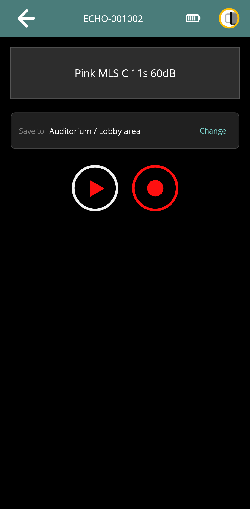
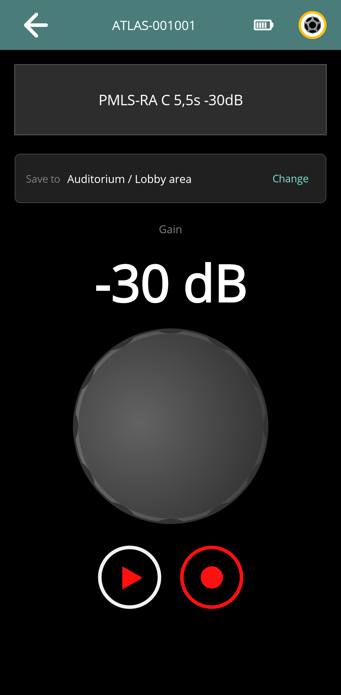
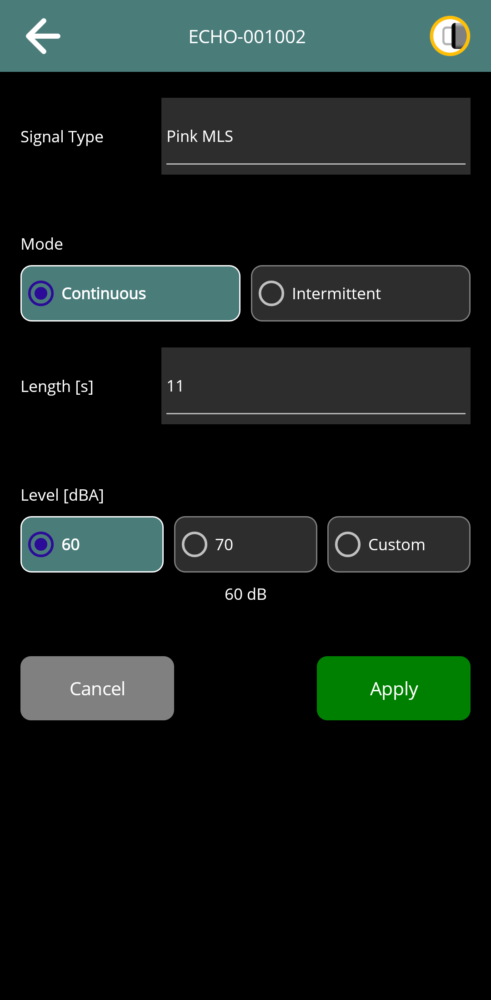
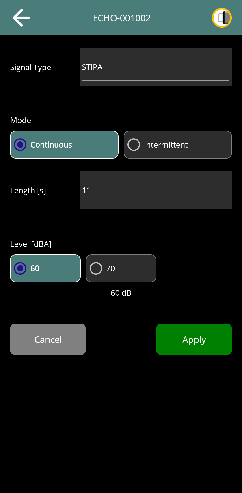
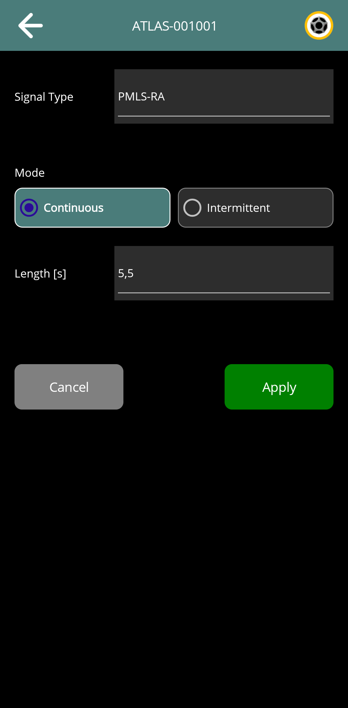
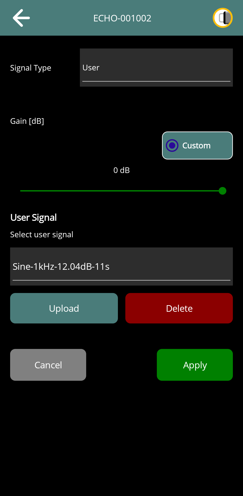

Using Echo and Atlas
Draft for review: These DIRAC Field instructions and illustrations are being reviewed.
On this page
Echo and Atlas share the signal-selection and playback workflow in DIRAC Field. Their signal catalogues and output controls differ. Always check the device name and selected signal before starting playback.
Read the control page
The control page shows the device identity, battery/connection indications, selected signal and transport controls. Tap the signal display to open Signal Type configuration. Atlas also provides a gain readout and knob on the control page.
Play starts source playback and Stop stops it. The separate measurement/Record action acquires with available receivers and shows the Save to destination. It requires a suitable measurement signal and eligible receivers; playback on its own does not save a microphone recording.




Configure a signal
- Stop playback or acquisition before setting up a new measurement.
- Tap the signal display and select Signal Type.
- Choose the offered Mode and Length where they apply. A signal with only one mode does not offer an alternative.
- For Echo, set the signal's level or input gain where offered. Sine also provides a frequency setting; User provides a stored-signal selector. Atlas gain is adjusted on its main control page.
- Tap Apply. Wait for acceptance and verify the signal description on the control page. Use Cancel to discard the proposed configuration.
Only controls relevant to the selected device and signal are shown. The offered list also depends on the device's reported capabilities. Changing the type can change the available modes and lengths and, for Echo, the level choices. Check the offered settings before applying.
Continuous and Intermittent describe the source sequence, not whether DIRAC Field will save a recording. Their timing and available lengths are explained in the source hardware guide. An external analogue input also requires a physical signal connection.
Echo signals and levels
Echo provides Pink MLS, e-Sweep, STIPA, Speech, Sine, User and BNC selections where supported. Use Echo: Signal Setup for the signal meanings, available timing and hardware power limits.
Built-in calibrated signals present an acoustic Level; other sources present an electrical Gain. The displayed units and offered choices identify which applies. STIPA offers its supported preset levels. Do not interpret an external-input gain value as a calibrated sound level at the microphone.
For a tone, set the Sine frequency as well as gain. For User, select the required stored file. For BNC, check the upstream source and its level before starting the output.




Atlas signals and gain
Atlas provides the MLS-BA/RA, PMLS-BA/RA, ESWP-BA/RA, LSWP-BA and EqMLS-BA measurement sequences, together with User and AUX where supported. Building-acoustics and room-acoustics variants can have different mode and length choices. See Atlas: Signal Setup.
Atlas uses custom gain, from −60 to 0 dB, on its main control page. The signal setup page selects the signal and timing; applying those settings preserves the current gain. Set the required gain on the control page before starting playback. Gain can also be adjusted during ordinary playback.
Drag the gain knob to the desired value and release it; wait for the device state to confirm the requested value before relying on it. Gain adjustment is unavailable during an app-managed measurement.
A gain adjustment changes the source output, not the receiver calibration. Once a measurement has started, leave the measurement conditions stable. If a power or clipping warning is reported, check the source and level before repeating the measurement.


Stored user signals
Select User on the signal configuration page. Choose a stored signal, or use Upload to select a supported audio file through the system file picker. Wait for upload progress to finish, select the intended file, then Apply the configuration.
Delete removes the selected stored user signal from the source after confirmation. It does not delete a project measurement in DIRAC Field. Check that you have retained the original audio file before deleting the device copy. The source validates uploaded data; a rejected file must be corrected rather than merely renamed.


Measure with receivers
- Connect the intended Aether/HBK 2255 receivers and verify any HBK source-measurement prerequisite.
- Apply a supported measurement signal and check the destination. Ordinary playback must be stopped before the Echo/Atlas measurement action becomes available.
- Tap the measurement/Record control. Allow preparation, capture, retrieval and any sequence processing to finish.
- Check the destination group for every expected receiver result. Use Results and Analysis to inspect it.
The app records the stimulus information with a source-triggered run and processes supported sequences as appropriate. Merely recording arbitrary user audio or an external input does not guarantee an impulse response. A partial result requires inspection of each receiver entry.
Settings and hardware operation
Use menu → Settings from the source page for Device settings. These include the supported network, password, power and software controls. Hardware screen icons, local buttons, connectors and protection warnings are documented in the Echo and Atlas guides.